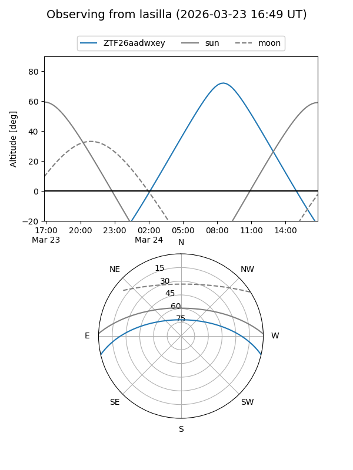
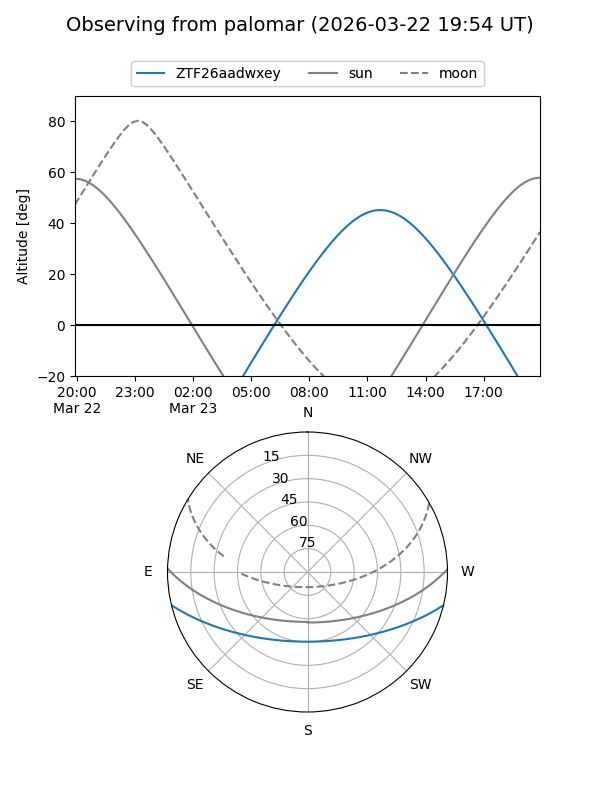

ZTF26aadwxey
Target ZTF26aadwxey at 2026-03-23 12:09
Aliases and brokers:
FINK: link
Lasair: link
ALeRCE: link
alt names
ZTF26aadwxey (ztf,fink_ztf)
Coordinates:
equatorial (ra, dec) = 238.6748,-11.36452
equatorial (HMS+DMS) = 15:54:41.96,-11:21:52.28
galactic (l, b) = (358.2240,+31.21721)
Flags:
Photometry:
last ztfg=16.93
1 ztfg detections
Lightcurve
Visibility


Additional plots